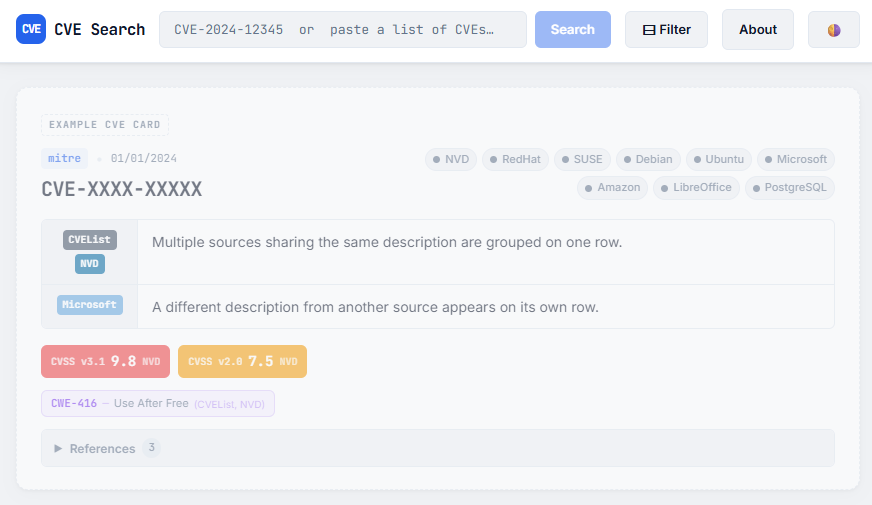
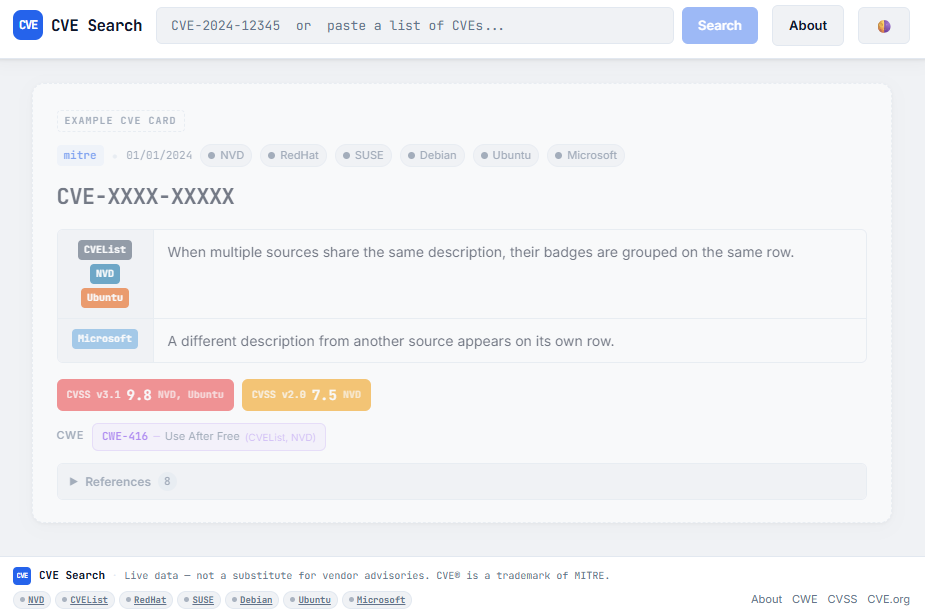
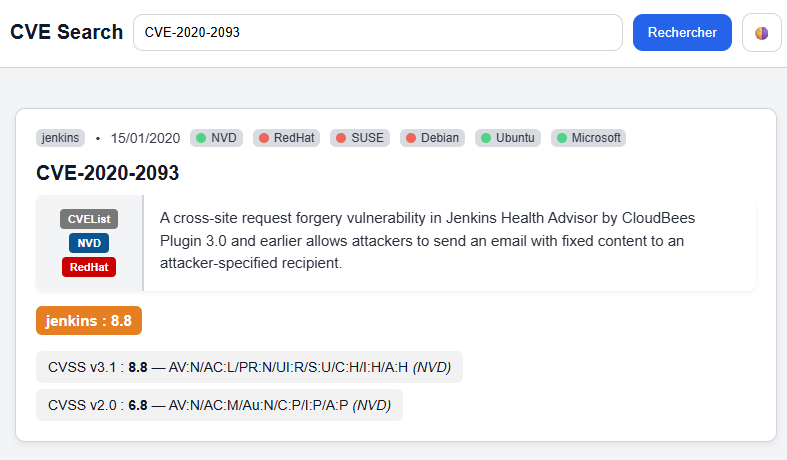
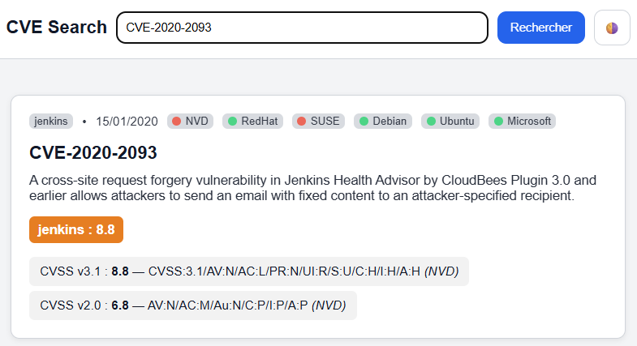
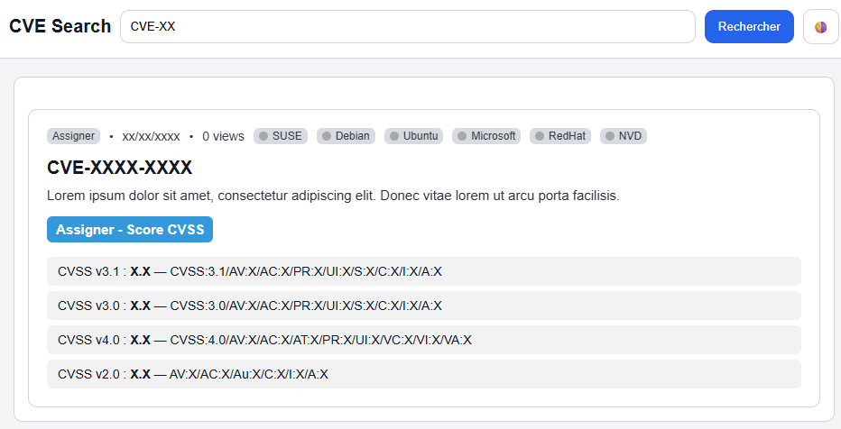
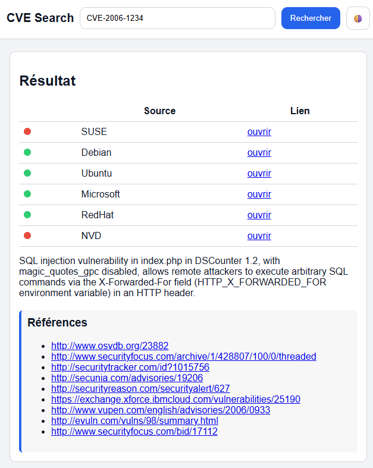

Version history
Changelog
A chronological record of all CAT releases, improvements, and fixes.
v1.3 — Current
Multiple fixes · EPSS score · ENISA source
Current
01/04/2026
Added
- EPSS score — Add the probability of an exploit under 30 days for concerned CVE.
- Source ENISA EUVD — REST API search → Description, CVSS score & vector, References
Improvement
- Multiples fixes (CVSSv4 duplication, debian references, CVElist CWE retrieval).
v1.2
CVE navigator · Field visibility · Persistent preferences · Smart refresh · Bug fixes
Feature
28/03/2026
Added
- CVE navigator — a compact dropdown embedded in the search bar (left of the search field) lists all active CVE cards with a CVSS severity dot. Clicking any entry scrolls smoothly to the card and highlights it with a blue glow. Closes automatically on outside click. Hidden when no cards are present.
- Field visibility — new Visible fields section in the ⚙ Options panel. Toggle Description, CVSS v3, CVSS v4, CVSS v2, CWE, and References on/off across all cards at once. Preference persisted in
localStorage.
Improvement
- Persistent preferences — Sort and Source filter are now saved to
localStorageand restored on every page load. - Full-width cards — CVE cards now stretch to the full page.
- Correction of a few details in all documentation pages
- Improvement of the CVElist retrieval, which now reads in a second field to retrieve data (containers.cna and containers.adp)
v1.1
Card management · Sort · Session persistence
Feature
22/03/2026
Added
- CVE persistence — searched CVEs are stored in
localStorageand automatically restored when navigating back to the search page, so results survive page changes within the same browser session. - Session cache — all fetched source data is saved in
sessionStorage(TTL: 4 hours). When a CVE is restored fromlocalStorage, no new network requests are made — the card is rebuilt instantly from the cached data. Cache is cleared when the browser tab is closed. - Refresh button per card — a ↻ button in the top-right corner of each card re-queries only the sources that previously returned a red (not found) or black/white (network error) dot, without touching already-successful sources.
- Delete button per card — a trash icon next to the refresh button removes a single CVE card and clears it from
localStorageand the session cache. - Options panel — the search bar now has a single ⚙ Options button that opens a unified panel containing: Sort, Visible sources (filter), and Remove all cards. This replaces the previous standalone Filter button.
- Sort — CVE cards can be sorted by CVSS score (ascending / descending), publication date, or CVE ID. The sort updates live as new CVSS scores arrive from Phase-2 sources.
Improvement
- GitHub link in footer — a GitHub icon has been added to the footer of all pages, linking to the project repository.
- Correction of a few details in all pages
v1.0
Full multi-source aggregator - First version publishing
Feature
18/03/2026
Feature
- CISA KEV — JSON feed, fetched once per session and shared across all cards -> Description, CWE
- Oracle — HTML scraping of oracle.com security-alerts -> Description
- Xen — HTML scraping and Json search -> Description
- Creation of the "Changelog" and "Contact" pages
Improvement
- Separate page "About" in "Technical Docs" and "User Guide"
- Correction of a few bugs in search method
- File HTML split in multiple files (.js, .css ...)
v0.9
Source filter · New sources
Feature
12/03/2026
Added
- Source filter panel — toggle any of the optional sources on/off; NVD and CVEList always visible
- Amazon Linux — HTML scraping -> Description, Score CVSS
- LibreOffice — HTML scraping -> Description
- PostgreSQL — HTML scraping -> Description, Score CVSS
Screenshot

v0.8
References · CWE · Footer
Feature
21/02/2026
Added
- CWE chips section — aggregated from CVEList, NVD, CSAF sources; live name fetch from cwe.mitre.org when not provided
- References section — collapsible panel listing all unique reference URLs
- Not-affected domain suppression in references — URLs from a source's own domain hidden when that source reports non-affectedness
- References section — deduplicated, with self-referential and CSAF/VEX URLs excluded
- Creation of a footer
Improvement
- Loading spinner on references that disappears once all Phase-2 sources have settled
- Improvement of the interface
Screenshot

v0.7
CVE batch search · Amber dot · Phase 1 / Phase 2
Feature
02/02/2026
Added
- Single and batch CVE search — paste any text containing
CVE-YYYY-NNNNNpatterns - Phase-1 / Phase-2 parallel fetch architecture — card renders immediately with CVEList + NVD, other sources fill the card independently
Improvement
- Amber dot (not affected) works for Ubuntu, debian, Redhat and Suse
- Improvement of the interface
- Improved CVSS vector normalisation — strips environmental/temporal metrics for clean deduplication across all new sources
v0.6
CVSS badge · Microsoft triple-source · About page
Feature
14/01/2026
Added
- CVSS v2.0, v3.0, v3.1, v4.0 support with colour-coded severity badges
- "Not in CVEList" warning card for newly reserved but unpublished CVEs
- Microsoft triple-source cascade — CSAF VEX + SUG API + CIRCL fallback queried in parallel; description and CVSS taken from the first successful source
Improvement
- Creation of the "About" page containing information on the functioning of the tool
- Improvement of the interface
v0.5
Badge sources · State link · Proxy
Feature
16/09/2025
Added
- Source description badge added on the left
- Cloudflare Worker CORS proxy to bypass browser Same-Origin Policy restrictions
- 5-state animated source dots: waiting (grey), ok (green), not-affected (amber), not-found (red), network-error (black/white)
Screenshot

v0.4
Descriptions · CVSS deduplication
Feature
06/06/2025
Added
- NVD — NIST REST API v2 -> description, CVSS v2/v3/v4
- Red Hat — CSAF VEX (primary) + Hydra legacy API (fallback CVSS) -> description, CVSS
- SUSE — CSAF VEX via public FTP -> description, CVSS
- Debian — HTML scraping of security-tracker.debian.org -> description
- Ubuntu — Canonical JSON API with dual endpoint fallback + Ubuntu-specific description
Improvement
- CVSS deduplication — scores grouped by (version, score, vector) triplet; multiple sources sharing the same score merged into one badge with combined source labels
- Improvement of the interface
Screenshot

v0.3
CVSS score · Template card · Description deduplication
Feature
18/02/2025
Added
- CVEList — MITRE CVEProject/cvelistV5 GitHub repo (assigner, date, description, CVSS)
- CVSS v2.0, v3.0, v3.1 support; assigner + publication date from CVEList metadata
- The sources are now in the top right as clickable pill
- Description deduplication — identical descriptions from multiple sources merged into a single row
- Single CVE search with skeleton loading card
Removed
- References fields set aside to focus on scores and description
Improvement
- Improvement of the interface (redesign of the HTML/CSS graphic charter)
Screenshot

v0.2
Data · Link state · Style
Feature
07/09/2024
Added
- Primary source information: Retrieval of the description and references from the NVD
- 2-state source status dots : reachable/unreachable (green/red)
- Dark / Light mode with
localStoragepersistence
Improvement
- Improvement of the interface (redesign of the HTML/CSS graphic charter)
Screenshot

v0.1
Initial release
Initial
05/07/2024
Foundation
- First working version — single CVE search
- Show redirecting links for sources identified
Screenshot

🖨️ Planned improvements
- Export card data to JSON or CSV
- Additional sources
- Pull-request ideas welcome